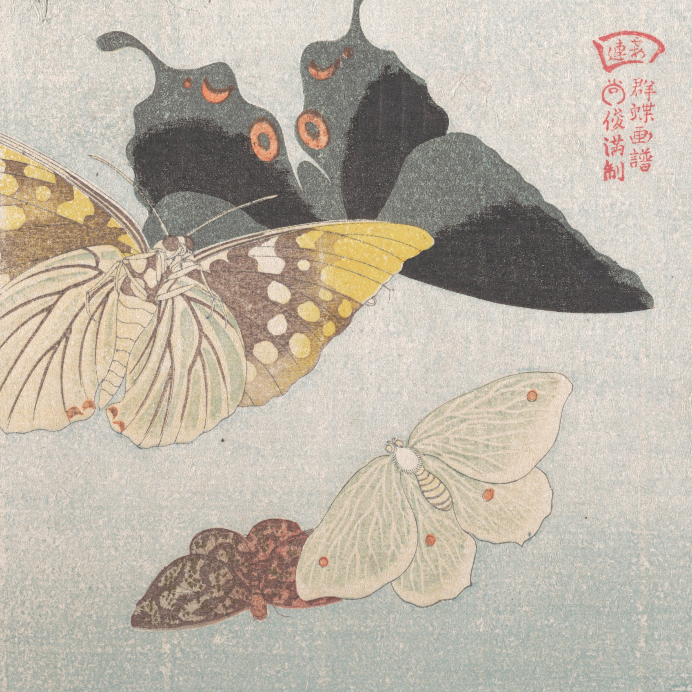
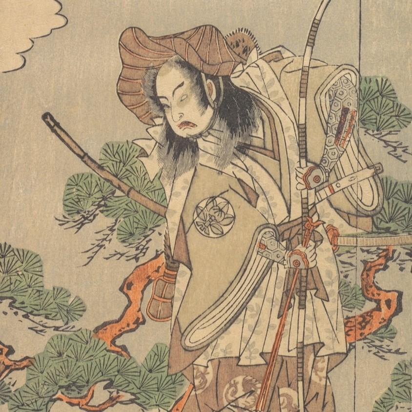

L'origami è l'arte giapponese di piegare la carta.
Il termine deriva dall'unione di oru, che vuol dire piegare, con kami, che significa carta.
storia
La storia dell'origami è strettamente legata a quella della carta stessa. La storia della carta, a quanto si sa, è cominciata in Cina, ma è in Giappone che l’origami si è sviluppato e ed è divenuto parte integrante della società stessa.
la carta
i significati sacri degli origami
Il periodo Heian
Il periodo Muromachi o Ashikaga
Il periodo Edo o Tokugawa
Fine del periodo Edo
I nostri modelli
gru
tsuru 鶴
carpa
koi 鯉

farfalle
Ocho 雄蝶
mecho 雌蝶

raganella
kaeru 蛙
noshi
noshi 熨斗
bicchiere
盃
